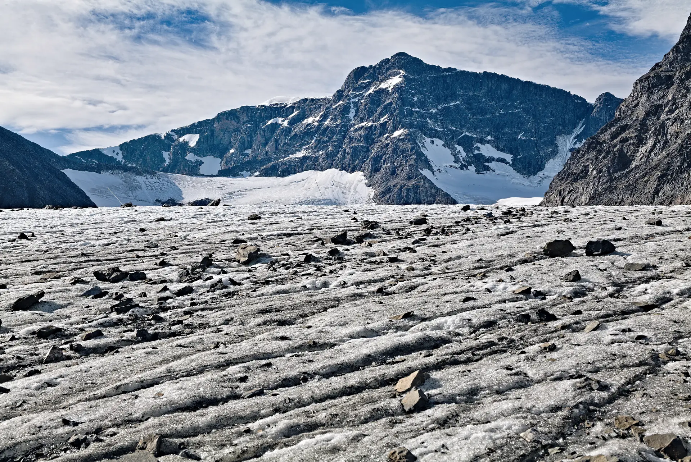

Face à
la montagne.
Un sommet. Toute une vallée.
Préparation du relief…
Relief & crédits
Interprétation 3D du relief de l’Ama Dablam. Copernicus DEM GLO-30, résolution source de 30 m. Crêtes affinées, matière rocheuse et neige interprétées pour cet aperçu.
© DLR e.V. 2010–2014 et Airbus Defence and Space GmbH 2014–2018. Fourni sous COPERNICUS par l’Union européenne et l’ESA.
Photo de secours : Leonhard Lenz, Storglaciären, CC0.